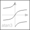

atan3Four quadrant inverse tangent (select solution that is closest to given angle y0) |

|
Information
This information is part of the Modelica Standard Library maintained by the Modelica Association.
This function returns y = atan3(u1,u2,y0) such that
tan(y) = u1/u2 and
y is in the range: -pi < y-y0 ≤ pi.
u2 may be zero, provided u1 is not zero. The difference to
Modelica.Math.atan2(..) is the optional third argument y0 that
allows to specify which of the infinite many solutions
shall be returned:

Note, for the default case (y0=0), exactly the same result as with atan2(..) is returned.
Syntax
Inputs (3)
| u1 |
Type: Real Description: First independent variable |
|---|---|
| u2 |
Type: Real Description: Second independent variable |
| y0 |
Default Value: 0 Type: Angle (rad) Description: y shall be in the range: -pi < y-y0 <= pi |
Outputs (1)
| y |
Type: Angle (rad) Description: Dependent variable y=atan3(u1, u2, y0)=atan(u1/u2) |
|---|